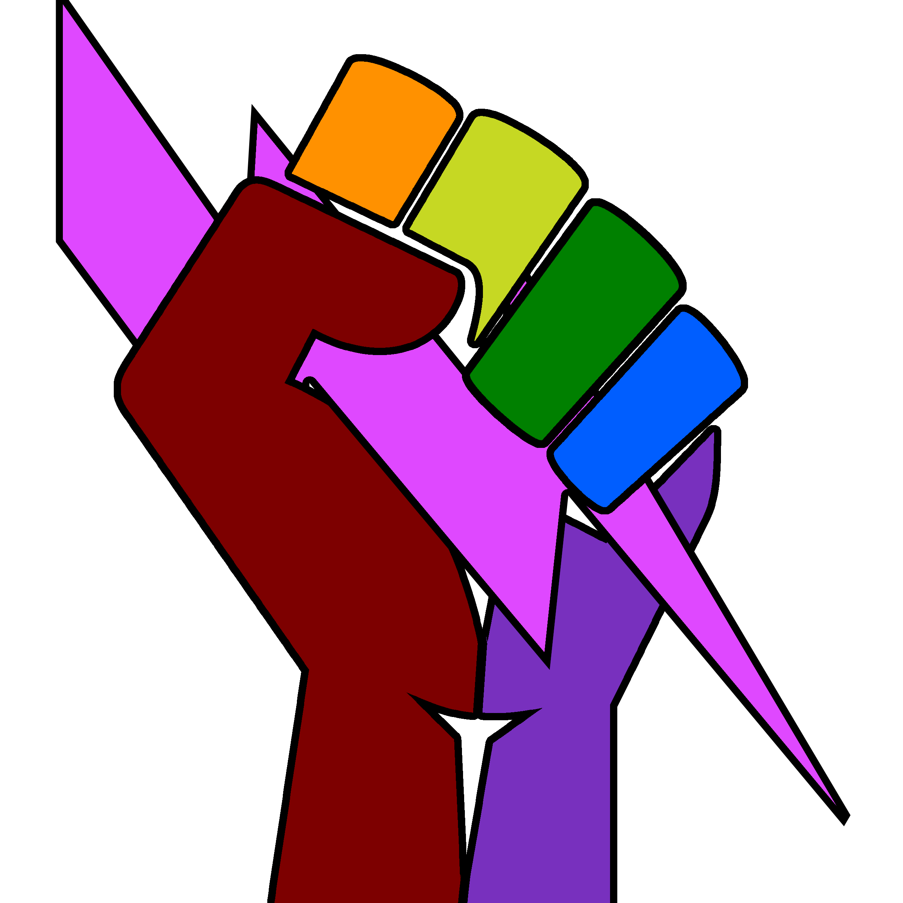
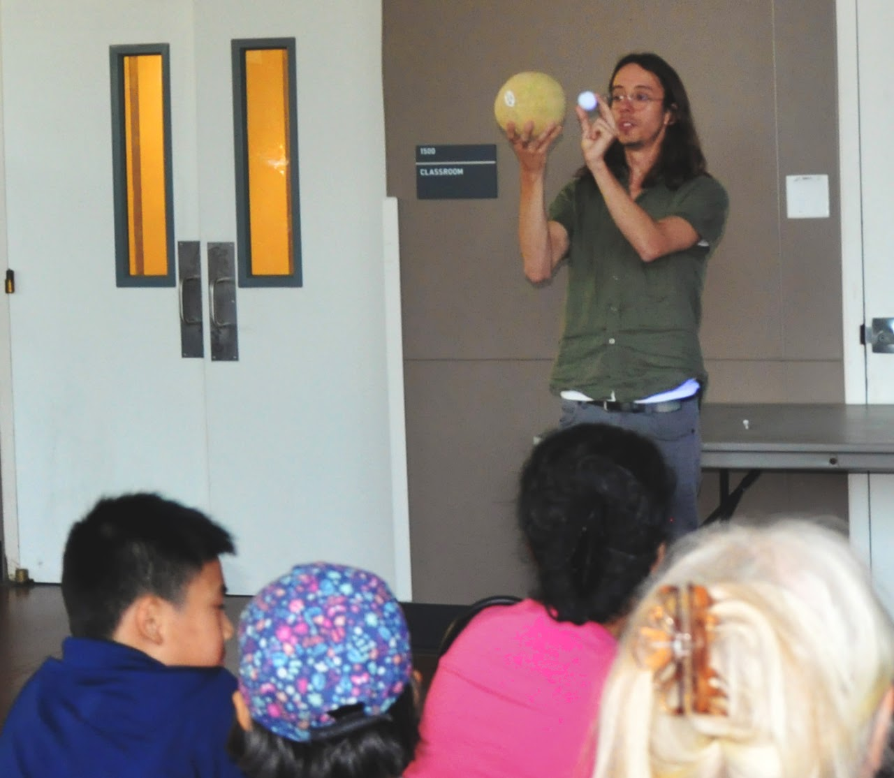

Beyond my research and teaching duties, I am an advocate for Diversity, Equity, and Inclusion in my department and university. This manifests in one way as my role as the current president of the Physics Organization for Womxn and the Under-Represented (POWUR). I also founded our Inclusivity Seminar series.

The mission of the Physics Organization for Womxn and the Under-Represented (POWUR) is to create an inclusive and welcoming environment for students, post-docs, faculty, and staff within the Department of Physics and Astronomy at the University of California, Riverside. We aim to create an environment in which all members of the department feel welcome and empowered regardless of their skin color, ethnicity, native language, gender, sexuality, ability level, physical appearance, age, political opinion, or religion. We recognize the existence of systemic inequities both within and outside of this department which contribute to the lack of representation of marginalized groups in the larger population of physicists, as well as within ranks of this department. We intend to collaboratively work with both the Department and the University at large to recognize and address these inequities. Further, we intend to contribute to a culture of openness, comradery, communication, and action by engaging in these values and inviting other members of our department to participate with us.
I am also a member of UCR's DEI Climate Council, which advocates for the concrete realization of the values of inclusivity, respect, and openness throughout the university.
I also participate in outreach to the community. I've given talks to local high school students on paths to becoming a scientist, advocating for community colleges as a cost-effective way to kickstart one's education. I have also given public demonstrations of astronomy concepts at events such as the 50th Anniversary of the Moon Landing, hosted by UCR and the Riverside Astronomy Club.
